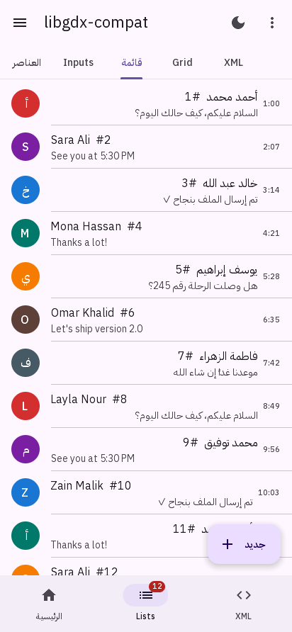

libgdx-compat
libgdx-compat Lists, grids & pages#
RecyclerView#
RecyclerView creates only the rows that are on screen and re-binds them while scrolling, so 100 000 items cost the same as 10. It supports vertical lists, vertical grids and horizontal lists.

The simple way: ListAdapter#
For a list of items with one kind of row:
Array<Contact> contacts = loadContacts();
RecyclerView list = new RecyclerView();
list.setOnItemClick(position -> open(contacts.get(position))); // before setAdapter
list.setAdapter(new RecyclerView.ListAdapter<>(contacts,
() -> new ContactRow(), // creates a row
(row, contact, position) -> row.bind(contact))); // fills it
A row is any actor, usually a small layout that keeps references to its children:
class ContactRow extends LinearLayout {
final TextView name = new TextView("", Typography.BODY_LARGE);
final TextView phone = new TextView("", Typography.BODY_MEDIUM);
ContactRow () {
super(VERTICAL);
setPadding(dp(16), dp(8));
add(name).matchWidth();
add(phone.setTextColor(Compat.theme.onSurfaceVariant)).matchWidth();
}
void bind (Contact c) {
name.setText(c.name);
phone.setText(c.phone);
}
}
Full control: Adapter#
Subclass RecyclerView.Adapter for several row types or different heights, exactly as on Android:
list.setAdapter(new RecyclerView.Adapter<RecyclerView.ViewHolder>() {
@Override public int getItemCount () { return messages.size; }
@Override public int getItemViewType (int position) {
return messages.get(position).mine ? 1 : 0;
}
@Override public RecyclerView.ViewHolder onCreateViewHolder (int viewType) {
return new RecyclerView.ViewHolder(viewType == 1 ? new MyBubble() : new TheirBubble());
}
@Override public void onBindViewHolder (RecyclerView.ViewHolder holder, int position) {
((Bubble)holder.itemView).bind(messages.get(position));
}
// Optional: return an exact height to skip measuring (-1 = measure the view type once)
@Override public float getItemSize (int position, float crossSize) {
return dp(64);
}
});
After changing the data call notifyDataSetChanged(), notifyItemChanged(position), or notifyItemRangeChanged() (items appended or removed; visible rows keep their views).
getItemSize.Grids and horizontal lists#
RecyclerView grid = new RecyclerView();
grid.setSpanCount(3); // columns
grid.setSpacing(dp(8)); // gap between items
grid.setPadding(dp(12));
RecyclerView carousel = new RecyclerView(false); // horizontal
Dividers, refresh and endless loading#
list.setDividers(true, dp(72)); // inset from the start edge
list.setOnRefresh(() -> reload(() -> list.setRefreshing(false))); // pull to refresh
list.setOnEndReached(() -> loadNextPage()); // once per data change
list.setOnScroll((view, scroll, delta) -> {
if (delta > 0) fab.shrink(); else if (delta < 0) fab.extend();
});
Scrolling from code#
list.scrollToPosition(250);
list.smoothScrollToPosition(0);
int first = list.getFirstVisiblePosition();
ViewPager#
Swipe between pages with snapping. Only the visible page(s) are laid out, drawn and touchable.
ViewPager pager = new ViewPager();
pager.addPage(homePage); // an existing actor
pager.addPage(index -> buildStatisticsPage()); // built the first time the user gets near it
pager.addOnPageChangeListener(new ViewPager.OnPageChangeListener() {
@Override public void onPageScrolled (float position) { }
@Override public void onPageSelected (int index) { updateTitle(index); }
});
pager.setCurrentItem(2); // animated
pager.setCurrentItem(2, false); // jump
pager.setSwipeEnabled(false);
A vertical list inside a page scrolls normally; the pager only takes horizontal drags.
TabLayout#

TabLayout tabs = new TabLayout(TabLayout.MODE_SCROLLABLE); // or MODE_FIXED
tabs.addTab("Home");
tabs.addTab("Settings", Icons.SETTINGS); // icon + text
tabs.setupWithViewPager(pager); // keeps both in sync, indicator follows the swipe
Without a pager use setOnTabSelected(index -> ...) and selectTab(index). Colours: setColors(selected, unselected, indicator).